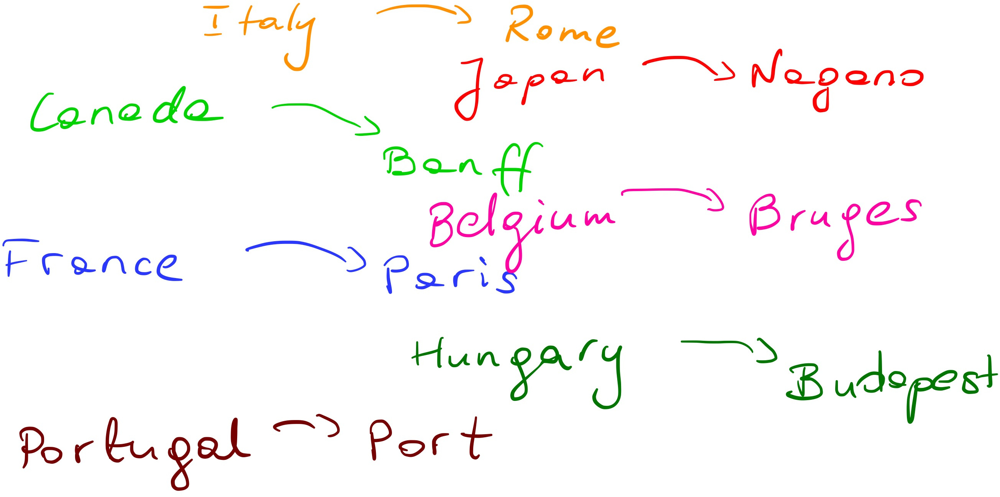
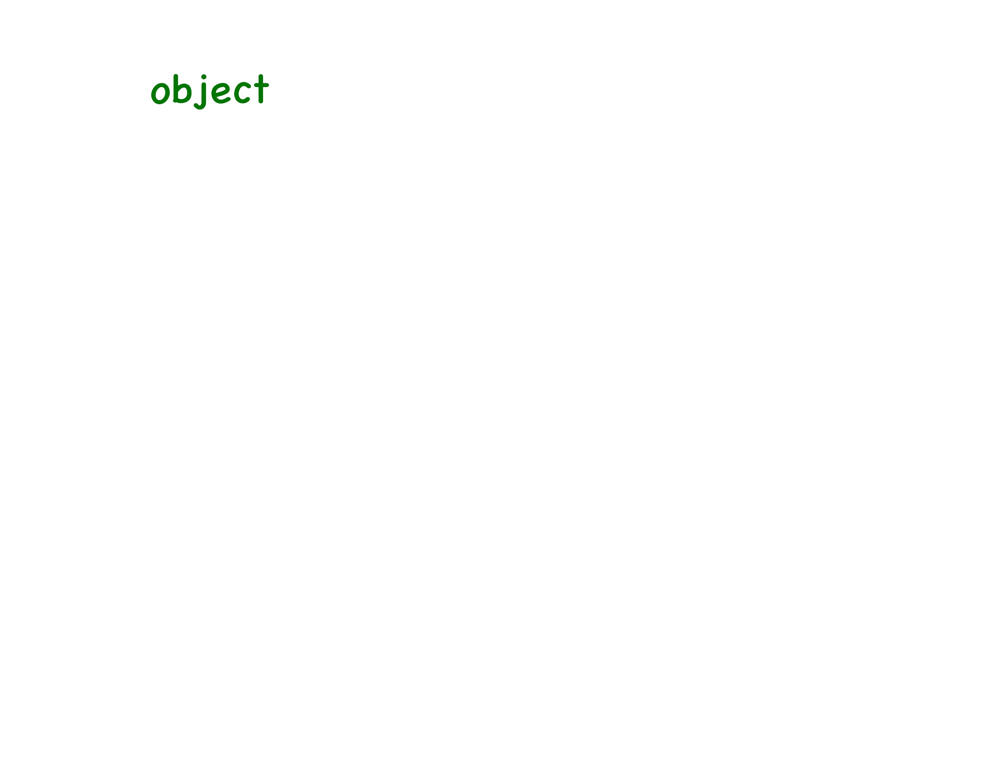
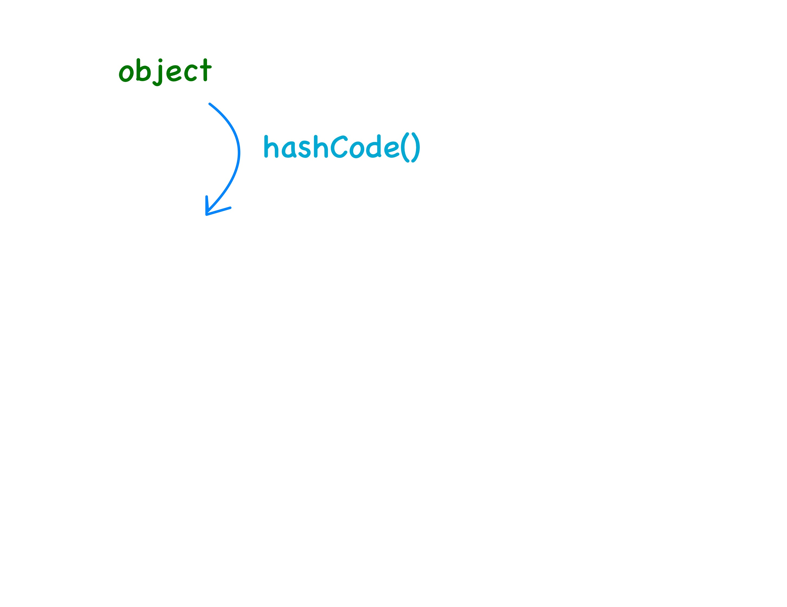
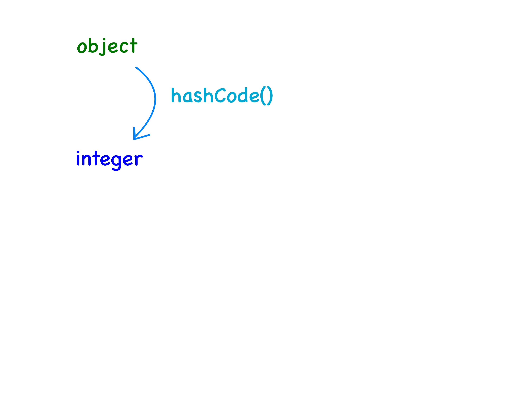
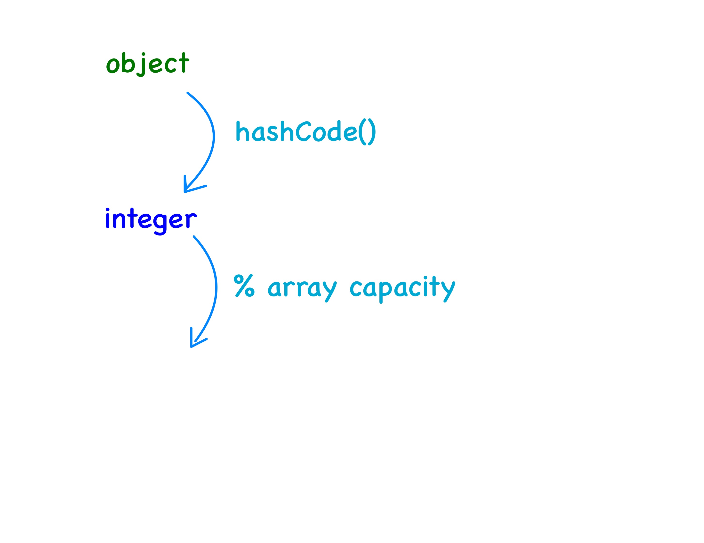
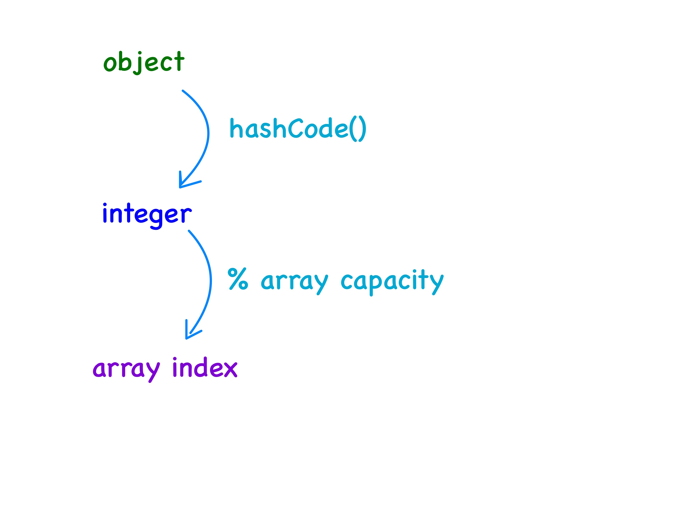

class: center, middle, title-slide # CSCI-UA 102 ## Data Structures <br> ## Hash Tables .author[ Instructor: Joanna Klukowska <br><br><br> ] .license[ Copyright 2020 Joanna Klukowska. Unless noted otherwise all content is released under a <br> [Creative Commons Attribution-ShareAlike 4.0 International License](https://creativecommons.org/licenses/by-sa/4.0/).<br> Background image by Stewart Weiss<br>] --- layout:true template: default name: section class: inverse, middle, center --- layout:true template: default name: breakout class: breakout, middle --- layout:true template:default name:slide class: slide .bottom-left[© Joanna Klukowska. CC-BY-SA.] --- template: section # Hash Tables / Maps and Why We Want Them --- template: slide ## Why Hash Tables? - We want a data structure that allows us to access existing elements and insert new elements in constant time. -- - Is it possible? -- - theoretically, yes, - in practice, we can get close, but we always have a possibility of a worst case and there is a big trade-off between memory and time (i.e., to get close to O(1) time, we will need to use a lot more memory) --- ## What are Hash Tables? - A __hash table is a look-up table__ that, when designed well, has nearly O(1) amortized running time for a *find* or *insert/add* operations. - More precisely, a hash table is an array of __fixed size__ containing data items with __unique keys__ (do not confuse *keys* with array indexes), together with a function called a __hash function__ that maps keys to indexes in the table/array. -- __Example__ If the keys are integers and the hash table is an array of size 127, then the function `hash(key)`, defined by `hash(key) = key % 127` maps numbers to their modulus in the finite field of size 127. -- Note that - for each `key` (a number in the above example) there is only one possible value of `hash(key)`, - multiple keys may have the same value of hash(key) (i.e. the hash function is not one-to-one): - for example the keys 10, 137, and 264 all map to the same array location because `$10 \% 127 = 137 \% 127 = 264 \% 127 = 10$` --- ## What are Hash Tables? Conceptually, a hash table is a very general structure: -- - it is a table `H` containing a collection of `(key, value)` pairs with the property that `H` may be indexed by the `key` itself -- - we usually reference an element of an array `A` by writing something like `A[i]`, using an integer index value i -- with a hash table, we replace the index value `i` by the key contained in location `i` and use `H[key]` to access values that we are interested in -- name: example - for example, if `H` contains the set of pairs .left-column2-small[ .smaller[ ``` {"Italy", "Rome"} {"Japan", "Nagano"} {"Canada", "Banff"} {"France", "Paris"} {"Belgium", "Bruges"} {"Hungary", "Budapest"} {"Portugal", "Porto"} ``` ]] .right-column2-large[ .center[  ] ] -- - then to access elements we could write a statement such as - `print H["Italy"]` to retrieve and print `Rome`, or - `print H["Portugal"]` to retrieve and print `Porto`. -- - as long as we know the `key` associated with the data item, we can access it in the table in, at least theoretically, O(1) time. --- template: example - similarly, when we want to insert a new data item into the table, we simply determine its `key` and add it to the table at the location `H[key]` using `H[key] = new_element` -- <br> potential problem: well, sometimes we cannot do this, can we? (think of trying to add another pair (”Italy”, ”Florence”) to the above table: we'll either end up with two pairs with the same `key` or we'll have to replace `"Rome"` with `"Florence"`) --- template:section # Hash Tables in Java --- ## `Map<K,V>` Interface - Java provides a `Map` interface and several possible implementations of it. - https://docs.oracle.com/en/java/javase/17/docs/api/java.base/java/util/Map.html -- - `interface Map<K,V>` - __an object that maps keys of type `K` to values of type `V`__ (`K` and `V` are generic types, this is a good example of using non-standard generic letters that have their own meaning in the `Map` structure - you can use whatever letters you wish when you implement your own hash tables) - __a map cannot contain duplicate keys; each key can map to at most one value__ -- - there are several methods in the `Map` interface that we are going to be using and you should be familiar with: - __`V put(K key, V value)`__ associates the specified `value` with the specified `key` in this map; returns the previous value associated with `key`, or `null` if there was no mapping for `key` - __`V get(Object key)`__ returns the value to which the specified `key` is mapped, or `null` if this map contains no mapping for the `key` - __`V remove(Object key)`__ removes the mapping for a `key` from this map if it is present; returns the previous value associated with `key`, or `null` if there was no mapping for `key` - __`Set<K> keySet()`__ returns a `Set` view of the keys contained in this map --- ## `Hashtable<K,V>` vs `HashMap<K,V>` vs .left-column2[ __`Hashtable<K,V>`__ class - https://docs.oracle.com/en/java/javase/17/docs/api/java.base/java/util/Hashtable.html - `class Hashtable<K,V> implements Map<K,V>` This class implements a hash table, which maps keys to values. Any non-null object can be used as a `key` or as a `value`. To successfully store and retrieve objects from a hash table, the objects used as keys must implement the `hashCode` method and the `equals` method. **This class is now considered obsolete. It iherits from the [Dictionary class](https://docs.oracle.com/en/java/javase/17/docs/api/java.base/java/util/Dictionary.html) which has been labeled obsolete for some time.** [`ConcurrentHashMap](https://docs.oracle.com/en/java/javase/17/docs/api/java.base/java/util/concurrent/ConcurrentHashMap.html) should be used instead. ] -- .right-column2[ __`HashMap<K,V>`__ class - https://docs.oracle.com/en/java/javase/17/docs/api/java.base/java/util/HashMap.html - `class Hashtable<K,V> implements Map<K,V>` This class implements a hash table, which maps keys to values. __The `HashMap` class is roughly equivalent to `Hashtable`, except that it is unsynchronized and permits nulls.__ To successfully store and retrieve objects from a hash table, the objects used as keys must implement the `hashCode` method and the `equals` method. ] --- template:section # Implementing Hash Tables --- ## Implementation Considerations - __What is used for storing a hash table?__ -- Usually __arrays__ are used to store hash tables. (But there might be other structures stored within each locations in the array.) -- - __What is the type of such array?__ -- The answer to this question depends on the implementation choices that are made in answer to questions below. In general, a single array location must contain the `(key, value)` pair. This could be implemented as a node containing the two values: ``` class HashNode <K, V> { private K key; private V value; } ``` In practice, such nodes are often linked in some way, so there may be a need to also store references to other nodes. -- - __How is the location in the array decided based on the key?__ -- This is where the __hash function__ mentioned before comes in. Hash function is applied to the key and it returns the index of an array location in which the given `(key, value)` pair should be stored. -- (Well, almost, there are a bit of intermediate steps.) -- - __What happens if hash function puts two different keys into the same array location?__ -- A __collision__ occurs when two different keys are sent to the same array location. Below, we will discuss several different approaches of __collision resolution__ (deciding what to do when collision occurs). -- - __Can the array be full and what do we do when it is?__ -- The array can certainly become too small to store all the data. __Rehashing__ is the technique used to create a new array and copy all the values to a new array. --- template: section # Hash Function ## (or Java's `hashCode`) --- name:hash-function # Hash Function - Based on unique keys we need to be able to compute the location in the array (or hash table) at which the given `(key, value)` combination can be stored. - Why can't we just use the key itself as an index? Well, it might be - too big, - negative, or - not an integer. -- .center[  ] --- template:hash-function .center[  ] --- template:hash-function .center[  ] --- template:hash-function .center[  ] --- template:hash-function .center[  ] --- template:hash-function - __Properties of a good hash function__: _A hash function is supposed to chop up its argument and construct a value out of the chopped up little pieces._ Good hash functions make the original key hard to reconstruct from the computed hash value. To be good, a hash function should be - __easy to compute__ (for speed), - __repeatable__, and - __randomly disperse keys__ evenly throughout the table, making sure that no two keys map to the same index. --- ## Good Hash Function - __Easy to compute__ generally means that the function is an O(1) operation, practically independent of the input size and hash table size. - For example, if the function tried to find all of the prime factors of a given number in order to compute the hash function, this would not be easy to compute. - Being easy to compute is a fuzzy concept. -- - __Repeatable__ means that making two calls to a hash function with the same argument should produce the same result. - It would be much easier to compute values quickly and disperse them well if you could use random numbers, but there is not way to recover the data from the hash table once it is saved there. -- - __Dispersing the keys evenly__ means that there is as much distance between successive pairs of keys as possible. - For example, if the hash table is of size 1000 and there are 200 keys in it, they should each be about five _spaces_ apart from their neighbors. -- .center80[ .important[ In principle, if the set of keys is finite and known in advance, we can construct a perfect hash function, one that maps each key to a unique index. In practice, the set of keys is rarely known at the time of writing the program and may not be finite. ]] --- ## The `hashCode()` and `equals()` Contract - If `a.equals(b)` is `true`, then `a.hashCode() == b.hashCode()` MUST be true. -- - If hashCode is different, the objects are definitely not equal. -- - Why? - If you override equals but not hashCode, your object might get lost in the map (put in bucket A, but looked for in bucket B). --- # Example (Bad Hash Function) If we have the integer keys ` 112, 46, 75, 515` we would want a function that maps them to the numbers/locations/indexes 0, 1, 2, and 3 uniquely. -- Suppose that `hash(key)` is a function that returns the sum of the decimal digits in the key and if that sum has more than one digit itself we add them together again . In this case we have - `hash(112)` = 1 + 1 + 2 = 4, - `hash(46)` = `hash(4 + 6 = 10)` = 1, - `hash(75)` = `hash(7 + 5 = 12)` = 3, and - `hash(515)` = `hash(5 + 1 + 5 = 11)` = 2. -- This is a perfect hash function for the above four keys. -- But it is very poor hash function for larger number of keys. Why is it bad: - It matches all keys to one digit indexes of an array. What if we have 250 keys? - It completely ignores information about position of digits in the key so 155, 515, 551 are all assigned the same index. --- ## Good Hash Functions: `String` class - Java provides a method called `hashCode()` for all its classes that can be used as keys into hash tables (`String`, `Integer`, ...). - For example, the `hashCode()` method in the String class is implemented as follows: .smaller[ ```java /** * Returns a hash code for this string. The hash code for a String object is computed as * s[0]*31^(n-1) + s[1]*31^(n-2) + ... + s[n-1] * using integer arithmetic, where s[i] is the i'th character of the string, * n is the length of the string, and ^ indicates exponentiation. * (The hash value of the empty string is zero.) * @return a hash code value for this object. */ public int hashCode() { int h = hash; if (h == 0 && value.length > 0) { char val[] = value; for (int i = 0; i < value.length; i++) { h = 31 * h + val[i]; } hash = h; } return h; } ``` ] --- ## Good Hash Functions: `Integer` class ```java /** * Returns a hash code for this {@code Integer}. * * @return a hash code value for this object, equal to the * primitive {@code int} value represented by this * {@code Integer} object. */ public int hashCode() { return value ; } ``` --- ## Good Hash Functions: `Double` class ```java /** * Returns a hash code for a double} value. * * @param value the value to hash * @return a hash code value for a {@code double} value. */ public static int hashCode(double value) { long bits = doubleToLongBits(value); return (int)(bits ^ (bits >>> 32)); } ``` --- template: section # Collision Resolution --- ## What happens when two things map to the same location? There are different ways of handling situations in which two keys map to the same location (called collision): - __open addressing__ (also known as __closed hashing__) - finds an alternative location for the `(key, value)` pair, if the first location is occupied, - __closed addressing__ (also known as __open hashing__) - allows multiple `(key, value)` pairs to be stored in a single array location. -- name: collision-resolution Each of these two have multiple ways of being implemented. Here are examples of how they can be handled. --- template:collision-resolution __Open addressing__ - __linear probing__ - put the `(key, value)` pair in the next available location, if that is occupied, try the next one and so on, - __quadratic probing__ - put the `(key, value)` pair in the next available location (1^2 away), if that is occupied, if that is occupied, then put in the location four spaces away (2^2), then nine spaces away (3^2), and so on (use a square of how many times we tried to put it in the next location). .smaller[In both of these, we need to handle retrieving elements from the hash table in a special way - they may not be in the locations computed by the hash value of the key. If the `(key, value)` pair is not found at the location computed by the hash function, we have to check all the other places in which the collision resolution method might have place them.] --- template:collision-resolution __Closed addressing__ - __separate chaining__ - put each `(key, value)` pair that maps to the same array location in a linked list (*chain* or *bucket*) that starts at that array location. If implemented well, the linked lists remain always very short. -- - Java implementation detail: when a chain (linked list) gets too long (default threshold is 8), Java transforms that specific list into a balanced binary search tree. This improves the worst-case search time from $O(N)$ to $O(\log N)$. --- name:example_linear ## Example: collisions with linear probing - key type `int`, value type is `String` - table size M = 5 - hash function `hash(key) = key % M ` - collision resolution: linear probing --- template:example_linear ``` Index Table Content ********************* 0 null 1 null 2 null 3 null 4 null ``` --- template:example_linear ``` Index Table Content ********************* 0 null 1 [ 11 | "A" ] 2 null 3 null 4 null ``` - `put(11, "A")` - `hash(11) = 11 % 5 = 1` - collision: no - insert (11, "A") at index 1 --- template:example_linear ``` Index Table Content ********************* 0 null 1 [ 11 | "A" ] 2 [ 7 | "B" ] 3 null 4 null ``` - `put(7, "B")` - `hash(7) = 7 % 5 = 2` - collision: no - insert (7, "B") at index 2 --- template:example_linear ``` Index Table Content ********************* 0 null 1 [ 11 | "A" ] 2 [ 7 | "B" ] 3 [ 12 | "C" ] 4 null ``` - `put(12, "C")` - `hash(12) = 12 % 5 = 2` - collision: yes, index 2 has another key-value pair already - resolve collision: probe the next index (2+1), it's available - insert (12, "C") at index 3 --- template:example_linear ``` Index Table Content ********************* 0 null 1 [ 11 | "A" ] 2 [ 7 | "B" ] 3 [ 12 | "C" ] 4 [ 22 | "D" ] ``` - `put(22, "D")` - `hash(12) = 12 % 5 = 2` - collision: yes, index 2 has another key-value pair already - resolve collision: probe the next index (2+1), another collision - resolve second collision: probe the next index (2+2), it's available - insert (22, "D") at index 2 --- template:example_linear ``` Index Table Content ********************* 0 null 1 [ 11 | "A" ] 2 [ 7 | "B" ] 3 [ 12 | "C" ] 4 [ 22 | "D" ] ``` - If we now run `get(22)` - how many array locations need to be checked? - what value is returned? --- template:example_linear ``` Index Table Content ********************* 0 null 1 [ 11 | "A" ] 2 [ 7 | "B" ] 3 [ 12 | "C" ] 4 [ 22 | "D" ] ``` - If we now run `get(22)` - how many array locations need to be checked? __3 locations at index 2, 3, and 4__ - what value is returned? __D__ --- template:example_linear ``` Index Table Content ********************* 0 null 1 [ 11 | "A" ] 2 [ 7 | "B" ] 3 [ 12 | "C" ] 4 [ 22 | "D" ] ``` - If we now run `put(3,"E")` - how many collisions will occur? - what index would it be placed in? --- template:example_linear ``` Index Table Content ********************* 0 [ 3 | "C" ] 1 [ 11 | "A" ] 2 [ 7 | "B" ] 3 [ 12 | "C" ] 4 [ 22 | "D" ] ``` - If we now run `put(3,"E")` - how many collisions will occur? __2 since the hash(3) = 3 (first collision), then we check index 4 (another collision), and finally check index 0 (no collision)__ - what index would it be placed in? __index 0, since we wrap to the front of the array__ -- __Note 1: Linear probing tends to produce clusters.__ -- __Note 2: In practice, we do not want the table to be full as above.__ --- template:example_linear ``` Index Table Content ********************* 0 [ 3 | "C" ] 1 [ 11 | "A" ] 2 [ 7 | "B" ] 3 [ 12 | "C" ] 4 [ 22 | "D" ] ``` - Let's run `remove(12)` - how do we find where the value matching 12 is? -- - hash (12) = 12 % 5 = 2, but the key stored at index 2 is NOT 12 -- - check the next index, the key at index 3 is 12, so we remove it and return the value --- template:example_linear ``` Index Table Content ********************* 0 [ 3 | "C" ] 1 [ 11 | "A" ] 2 [ 7 | "B" ] 3 null //this was removed 4 [ 22 | "D" ] ``` - Let's run `remove(12)` - how do we find where the value matching 12 is? - hash (12) = 12 % 5 = 2, but the key stored at index 2 is NOT 12 - check the next index, the key at index 3 is 12, so we remove it and return the value --- template:example_linear ``` Index Table Content ********************* 0 [ 3 | "C" ] 1 [ 11 | "A" ] 2 [ 7 | "B" ] 3 null //this was removed 4 [ 22 | "D" ] ``` - Let's run `get(3)` - how do we find where the value matching 3 is? -- - hash (3) = 3 % 5 = 3, but index 3 is empty, so what's next ??? -- **When we use open addressing with collision resolution, we need to be able to keep track of indexes that _used to_ have values. The `get` and `remove` algorithms treat them as if they were occupied when searching for a key. ** --- template:example_linear ``` Index Table Content ********************* 0 [ 3 | "C" ] 1 [ 11 | "A" ] 2 [ 7 | "B" ] 3 null //this was removed 4 [ 22 | "D" ] ``` - Let's run `get(3)` - how do we find where the value matching 3 is? - hash (3) = 3 % 5 = 3, index 3 is empty, **but marked as removed** so we continue to index 4, and then index 0 where we find key = 3 and return string C --- name:example_quad ## Example: collisions with quadratic probing - key type `int`, value type is `String` - table size M = 5 - hash function `hash(key) = key % M ` - collision resolution: quadratic probing --- template:example_quad ``` Index Table Content ********************* 0 null 1 null 2 null 3 null 4 null ``` --- template:example_quad ``` Index Table Content ********************* 0 null 1 [ 11 | "A" ] 2 null 3 null 4 null ``` - `put(11, "A")` - `hash(11) = 11 % 5 = 1` - collision: no - insert (11, "A") at index 1 --- template:example_quad ``` Index Table Content ********************* 0 null 1 [ 11 | "A" ] 2 [ 7 | "B" ] 3 null 4 null ``` - `put(7, "B")` - `hash(7) = 7 % 5 = 2` - collision: no - insert (7, "B") at index 2 --- template:example_quad ``` Index Table Content ********************* 0 null 1 [ 11 | "A" ] 2 [ 7 | "B" ] 3 [ 12 | "C" ] 4 null ``` - `put(12, "C")` - `hash(12) = 12 % 5 = 2` - collision: yes, index 2 has another key-value pair already - resolve collision: probe the next index (2+1^2), it's available - insert (12, "C") at index 3 --- template:example_quad ``` Index Table Content ********************* 0 null 1 [ 11 | "A" ] 2 [ 7 | "B" ] 3 [ 12 | "C" ] 4 null ``` - `put(22, "D")` - `hash(12) = 12 % 5 = 2` - collision: yes, index 2 has another key-value pair already -- - resolve collision: probe the next index (2+1^2) = 3, another collision -- - resolve second collision: probe the next index (2+2^2) % 5 = 6 % 5 = 1, another collision -- - resolve collision: probe the next index (2+3^2) % 5 = 11 % 5 = 1, another collision -- - resolve second collision: probe the next index (2+4^2) % 5 = 18 % 5 = 3, another collision -- - resolve second collision: probe the next index (2+5^2) % 5 = 27 % 5 = 2, another collision -- - resolve second collision: probe the next index (2+6^2) % 5 = 38 % 5 = 3, another collision - insert (22, "D") at ??? --- template:example_quad ``` Index Table Content ********************* 0 null 1 [ 11 | "A" ] 2 [ 7 | "B" ] 3 [ 12 | "C" ] 4 null ``` <br/> <br/> **We cannot find a possible location for (22, "D") in this case!!!** - This is sometimes an issue with quadratic probing since it skips some possibly empty indexes. -- **TO DO: redo this example with table size M = 7 using quadratic probing** - Does it have the same issue of being unable to find the location for (22,"D")? --- name:example_seperate ## Example: collisions with separate chaining - key type `int`, value type is `String` - table size M = 5 - hash function `hash(key) = key % M ` - collision resolution: separate chaining (linked lists) --- template:example_seperate ``` Index Table Content ********************* 0 null 1 null 2 null 3 null 4 null ``` --- template:example_seperate ``` Index Table Content ********************* 0 null 1 [ 11 | "A" ] -> null 2 null 3 null 4 null ``` - `put(11, "A")` - `hash(11) = 11 % 5 = 1` - collision: no - insert (11, "A") at index 1 --- template:example_seperate ``` Index Table Content ********************* 0 null 1 [ 11 | "A" ] -> null 2 [ 7 | "B" ] -> null 3 null 4 null ``` - `put(7, "B")` - `hash(7) = 7 % 5 = 2` - collision: no - insert (7, "B") at index 2 --- template:example_seperate ``` Index Table Content ********************* 0 null 1 [ 11 | "A" ] -> null 2 [ 7 | "B" ] -> [ 12 | "C" ] -> null 3 null 4 null ``` - `put(12, "C")` - `hash(12) = 12 % 5 = 2` - collision: yes, index 2 has other key-value pairs already - insert (12, "C") at the end of the list at index 2 --- template:example_seperate ``` Index Table Content ********************* 0 null 1 [ 11 | "A" ] -> null 2 [ 7 | "B" ] -> [ 12 | "C" ] -> [ 22 | "D" ]-> null 3 null 4 null ``` - `put(22, "D")` - `hash(12) = 12 % 5 = 2` - collision: yes, index 2 has other key-value pairs already - insert (22, "D") at the end of the list at index 2 --- template:example_seperate ``` Index Table Content ********************* 0 null 1 [ 11 | "A" ] -> null 2 [ 7 | "B" ] -> [ 12 | "C" ] -> [ 22 | "D" ]-> null 3 null 4 null ``` - If we now run `get(22)` - how many comparisons need to be made? - what value is returned? --- template:example_seperate ``` Index Table Content ********************* 0 null 1 [ 11 | "A" ] -> null 2 [ 7 | "B" ] -> [ 12 | "C" ] -> [ 22 | "D" ]-> null 3 null 4 null ``` - If we now run `get(22)` - how many comparisons need to be made? __3, once we find that 22 is in the chain at index 3, we need to compare 22 to keys of the other key-value pairs: 7, 12 and finally 22__ - what value is returned? __D__ --- template: section # Rehashing --- ## Growing the size of the table - To guarantee good performance, the __load factor__ (defined as number of elements divided by the size of the array) should be less than 1 (often it is expected to be below 0.75) $$\text{load factor} = \dfrac{\text{number of elements}}{\text{capacity of the table}}$$ -- WARNING <br/> The above definition uses the number of elements! (NOT the number of chains.) -- - When array becomes _too full_ (i.e. the load factor exceeds some predefined threshold), **all** the values stored in the table need to be __rehashed__ to a larger table. This is O(N) operation! --- ### Example Consider a table of size 7 and integer keys (values not shown): ``` 0 1 2 3 4 5 6 ------------------------------------ | 21 | 15 | | 38 | | 12 | 76 | ------------------------------------ ``` $\text{load factor} = \frac{5}{7} = 0.714 $ -- `put(16)` - results in $\text{load factor} = \frac{6}{7} = 0.857$ and we need to rehash. -- Let's say that the hash table grows by the rule of $2\times \text{current_size} + 1$ , then a new table will have size 15, and all the existing values need to be _rehashed_ to new locations - 21 % 15 = 6 - 15 % 15 = 0 - 38 % 15 = 8 - 12 % 15 = 12 - 76 % 15 = 1 -- ``` 0 1 2 3 4 5 6 7 8 9 10 11 12 13 14 ---------------------------------------------------------------------------- | 15 | 76 | | | | | 21 | | 38 | | | | 12 | | | ---------------------------------------------------------------------------- ``` -- - 16 % 15 = 1 results in a collision and the actual location will depend on the collision resolution method. --- template:section # Examples and Things to Think About --- ## Do we need the `key`s? Explain if we actually need to store the keys in a hash table? Which operations could do without keys? For which operations are keys necessary? </optgroup>